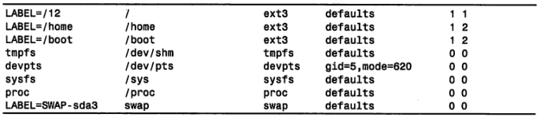
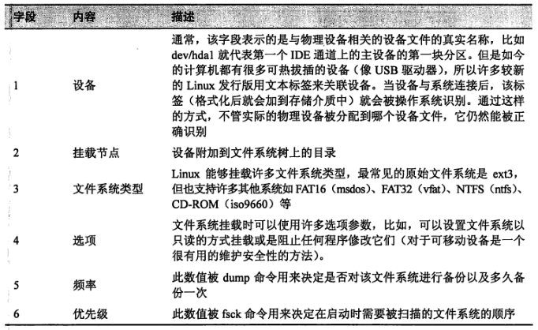
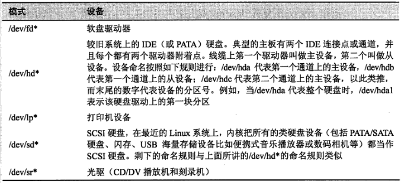
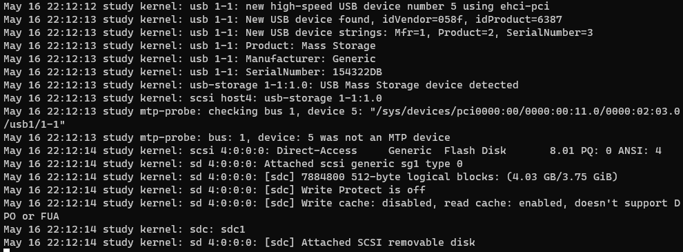

1. 存储介质
1.1. /etc/fstab
列出系统启动时挂载的设备
内容

- 字段含义

1.2. 确定设备名称
1.2.1. 系统如何命名设备
- 存储设备名称

/dev/hd*和/dev/sd*命名规则- hd*
- 设备
- /dev/hda 代表第一个通道上的主设备
- /dev/hdb 代表第一个通道上的从设备
- /dev/hdc 代表第二个通道上的主设备
- /dev/hdd 代表第二个通道上的从设备
- 以此类推
- 末尾的数字代表设备的分区号，从 1 开始
- 示例：当 /dev/hda 代表整个硬盘时，/dev/hda1 代表该硬盘驱动上的第一块分区
- 设备
sd*：与hd*类似，是否有主从设备的概念？
- hd*
/dev/sd*- SCSI 硬盘
- 在一般的 Linux 系统上，内核把所有的类硬盘设备都当作 SCSI 硬盘
1.2.2. 确定插入系统的可移动设备的名称
首先
- 对 /var/log/messages 文件进行实时查看
- sudo tail -f /var/log/messages
然后
- 插入可移动设备
最后
- 仔细观察 messages 输出即可确定设备名

- 说明
sdc: sdc1- sdc：设备名
- sdc1：设备的第一个分区
1.2.3. 手动挂载
sudo mount /dev/sdc1 /mnt/flash
1.3. 创建新的文件系统
1.3.1. 第一步(可选)
创建分区布局
fdisk：用于编辑、删除以及创建设备分区
分区前，需要先卸载设备
sudo umount /dev/sdb1
使用 fdisk 命令指定设备时，需要的是整个设备名而不是分区号
fdisk 使用过程
- 参考命令
fdisk
- 参考命令
1.3.2. 第二步
创建新的文件系统
使用 mkfs
- (make filesystem)：用于创建各种类型的文件系统
创建文件系统
sudo mkfs -t ext3 /dev/sdb1
- 支持的文件系统类型
- ext2
- ext3
- vfat(FAT32)
- msdos
1.4. 测试、修复文件系统
系统每次启动时，挂载文件系统前都会惯例性检查文件系统的完整性
fsck用于检查文件系统的完整性/etc/fstab中每个条目末尾的数字标识该设备检查的优先级- 0 表示不执行惯例性检查
fsck
- 用于惯例性检查(系统)、修复损坏的文件系统
- 在类 UNIX 文件系统中，已修复的文件会放在文件系统根目录下的 lost+found 目录中
- 检查时，设备不能处于挂载状态
- 示例
sudo fsck /dev/sdb1
1.5. 创建 CD-ROM 映像(ISO 文件)
步骤
- 第一步：创建 ISO 映像文件
- 第二部：将 ISO 文件写入 CD-ROM 介质中
通过现有 CD-ROM 创建 ISO 文件
dd if=/dev/cdrom of=ubuntu.iso
- 从文件集合中创建 ISO 文件
- genisoimage：用于创建包含一个目录内容的 ISO 文件
# -R 允许在 Linux 中使用较长文件名的文件以及 POSIX 风格的文件
# -J 允许在 Windows 中使用较长文件名的文件
genisoimage -o cdrom.iso -R -J ~/Documents/cdrom
1.6. 向 CD-ROM 写入映像文件
CD-ROM 和 DVD 介质均可使用这些命令
挂载 ISO 映像文件
mount -t iso9660 -o loop image.iso /mnt/iso_image
- 擦除可读写 CD-ROM
wodim dev=/dev/cdrw blank=fast
- 写入映像文件
wodim dev=/dev/cdrw image.iso